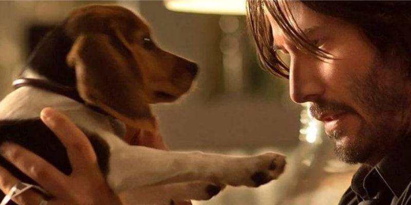
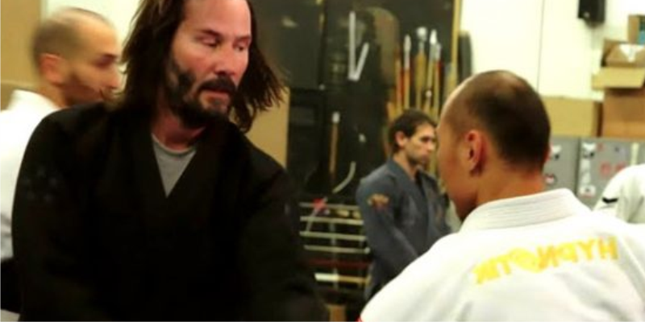
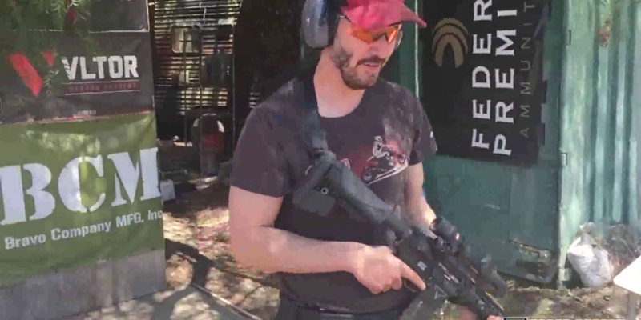
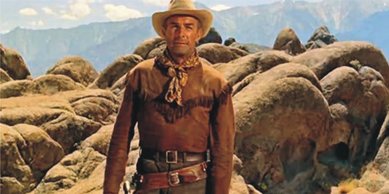
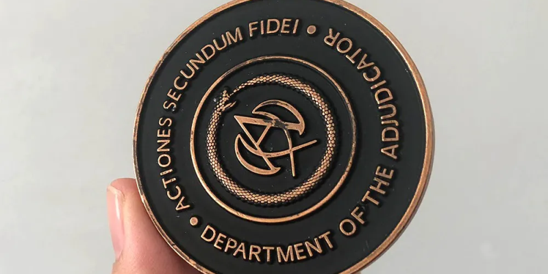
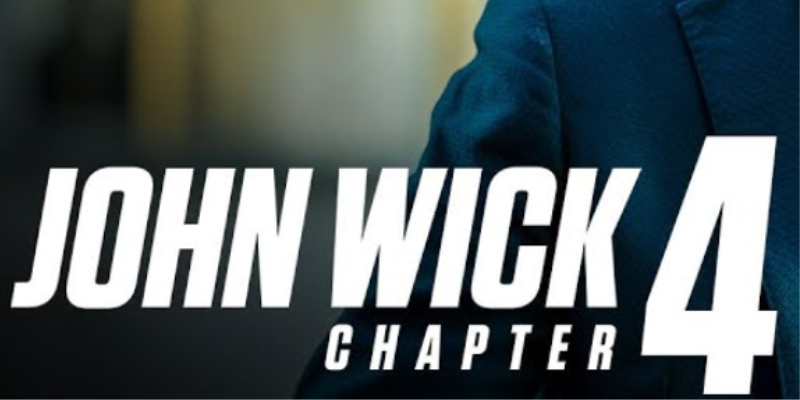
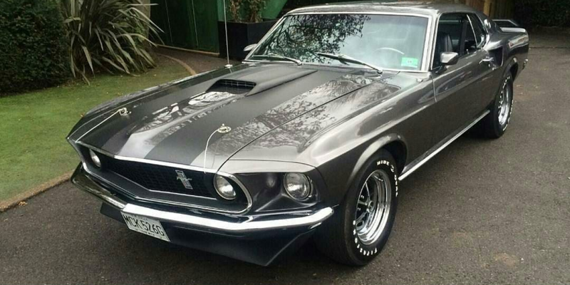

Cachorro Simbólico:
O cachorro que desencadeia a série de eventos nos filmes não é apenas uma parte do enredo. Ele também tem um significado simbólico, representando a última ligação de John Wick com sua falecida esposa.
Treinamento Intensivo:
Keanu Reeves passou por um treinamento extenso de artes marciais e manuseio de armas para dar vida ao personagem John Wick. Sua dedicação à preparação física e ao treinamento é evidente nas cenas de ação realistas.
Keanu Reeves como fã de Armas:
Antes de interpretar John Wick, Keanu Reeves já era um entusiasta de armas e tinha habilidades consideráveis de tiro. Sua paixão pessoal pela prática de tiro contribuiu para a autenticidade das cenas de ação.
Nome do Personagem:
O nome "John Wick" foi inspirado em parte pelo assassino de aluguel e protagonista do filme noir "O Homem que Luta Só" (1973), interpretado por Charles Bronson. O nome impõe respeito e cria uma aura de mistério em torno do personagem.
Hotel Continental:
O Hotel Continental, um local seguro e neutro para assassinos, é um elemento central na franquia. O nome "Continental" refere-se a moedas de ouro antigas que eram utilizadas em transações internacionais.
Linguagem dos Títulos:
Os títulos dos filmes da franquia seguem um padrão específico. "Chapter" (Capítulo) é usado para denotar sequência ou continuação, enfatizando que a história de John Wick é uma narrativa contínua.
Carros Clássicos:
Além das cenas de ação, os filmes da franquia também apresentam uma coleção notável de carros clássicos e veículos personalizados que refletem o gosto sofisticado de John Wick.